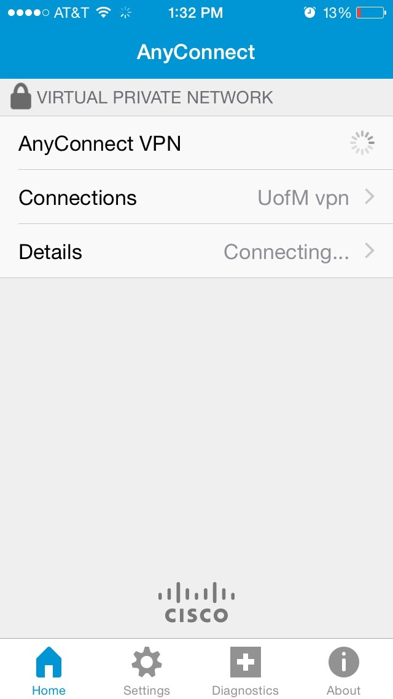

好久没像这样再写过类似信的文章了哈 上次还是7年前了^_^ (知道是黑历史啦) 首先 再一遍 生日快乐!! 永远 19!!
大学🏫生活是不是超级赞? 因为这里遇到好多从国内转过来的朋友👬 看他们大学里的照片📷完全是我向往的那样诶 事实的差距也知道啦 比如食堂什么的 苏大的怎么样诶 上次去的时候感觉环境还不错的 美国🇺🇸这儿怎么说呢 你从你弟弟那里也应该听说不少了吧 一群社交狂魔👯 一群学霸 和 一群丧心病狂的教授组成的社会 有的时候真的会码着代码然后忽然就和一群损友思考起人生 有的时候会庆幸没上国内的大学 有的时候又想 还是国内好 大学是不是经常能认识到新朋友呐 这里的中国人好多社交其实挺功利的 还有些自认为非常要好的朋友突然的就发现在追求上分道扬镳 国内的话会不会比这好得多还是.. 商科的话 你学的有具体方向的嚒 欸欸听徐知微说你想研究生去英国🇬🇧读呐 不知道为什么 总觉得女生单独出国好幸苦 总觉得紧要关头最能考的上的只有自己 当初认为你爸妈不上你出国好限制你 plus 中国高中好累 现在想想我当初还是太幼稚哈 现在当然还是! 一个人 ＋ 一群朋友 很不容易诶的 照顾好自己嗯
这两学期加寒假花了好多时间补动漫 特别是key社的Clannad 有的时候会感觉突然懂了好多(错觉吧) 还有什么 东京暗鸦 Angel Beats 罪恶王冠 那朵花 blahblahblah 看过无视啦
讲了好多关于自己的 都忘了今天主角是你! 应该有安排了吧今天 送了那么多年巧克力 确实应该换换了 U盘里放了些歌 虽然不懂 但有的时候听到旋律就能感受到一些 (哈哈假大空!) 随便听听啦 本来想放Clannad的 结果出了点技术问题 Sorry啦 身体注意诶(知道知道我好烦的) 美国这儿有个好的就是哪里都有健身房 动动动动动! 我现在已经能感受到程序猿们的颈根通病了= =! 自己都知道的嘛 不知道还有没有那么传统了 生日要吃什么面加黄豆芽加青菜加年糕 还有许愿哦
明明还有很多话想说的 但其实只想你开心就好 原来一直说的 "开心点喔" 上了大学才懂自己当时随口说出的话实际好难 但是 还是要开心啦 就算以后某天会在怎么难过 今天一定是开心^_^
终于到毁心情的部分了 或者其实早就毁了 我很想你呐 只是单纯的想喔 知道大学很忙啦 快...快期末了哈 但我还是想和你打一次电话 只是之前一直没成功(ノ_＜) 没有没有啦 快点无视这一整句话吧
嗯嗯 就这样 🎂生日快乐🎂
下面就是 iPhone 上 VPN 的设置 上次那个确实好烦en iPad 上应该差不多的 Facebook Twitter Instangram 刷起来！！Youtube看起来！！
在 App Store 里搜 AnyConnect 或者直接这里下！！

打开以后有提示的话选 OK 啦

点 Connections —>
Add VPN Connection...

Description 里打 UofM vpn (其实什么都行的)
Server Address 里打 tc-vpn-1.vpn.umn.edu
Save!!!

回到上一层

打开 AnyConnect VPN, 然后会有Authentication出来

Username: dingx292
Password: 发给你了en
右上角 Connect!

第一次应该会要我授权下en
^_^